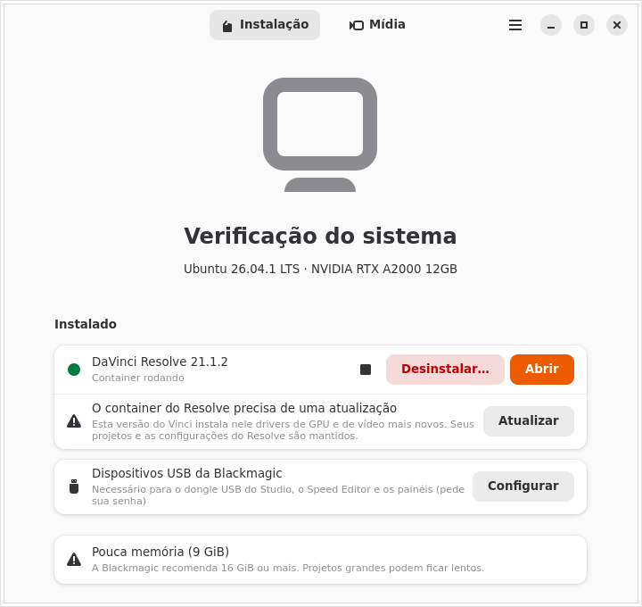
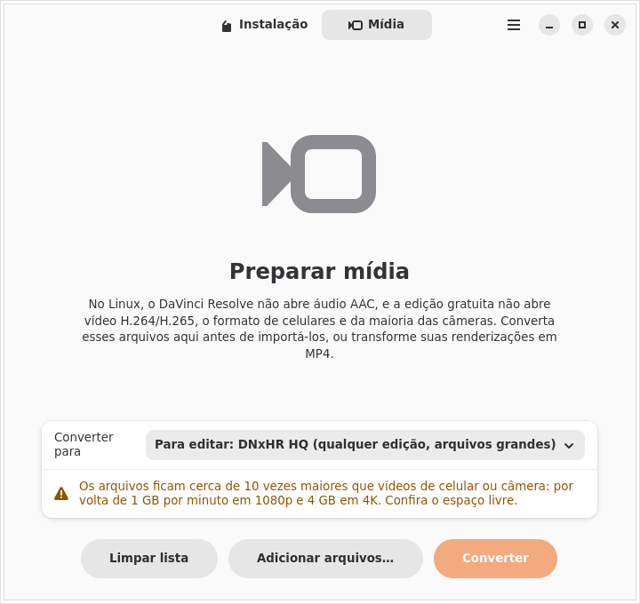
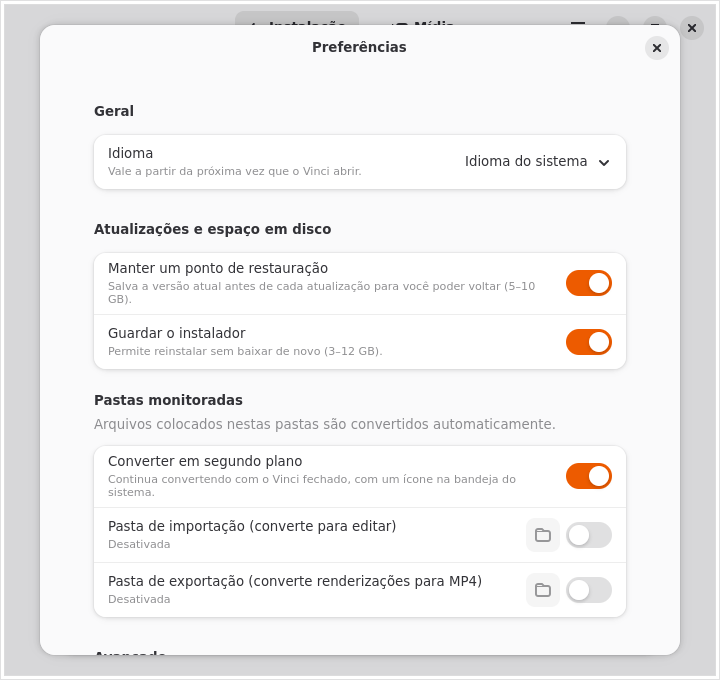

DaVinci Resolve em qualquer distro Linux.
O Vinci verifica o seu computador, instala o Resolve num container isolado com aceleração total da GPU e converte os vídeos que o Resolve não abre no Linux. Sem terminal e sem mexer nas bibliotecas do seu sistema.
Livre e de código aberto (GPL-3.0). x86_64 · Ubuntu, Fedora, Arch, openSUSE, Mint, Pop!_OS, Bazzite e outras. Projeto não oficial, sem afiliação com a Blackmagic Design.

Três passos
Oficialmente, o DaVinci Resolve só suporta o Rocky Linux. O Vinci dá a ele o ambiente que ele espera, um container Ubuntu 24.04 fixado, e assim ele funciona igual em qualquer distro.
Verificar
O Vinci confere GPU, driver, memória e espaço em disco e explica em português claro o que vai funcionar e o que pode dar problema.
Baixar
Baixe o instalador gratuito ou o Studio no site da Blackmagic Design. O Vinci encontra o arquivo na pasta Downloads sozinho, mesmo durante o download.
Instalar
Um clique. O Vinci prepara o podman e o distrobox, cria o container, instala o Resolve e coloca o atalho no menu. Depois é só abrir.
Tudo o que o Vinci faz
Um instalador que continua cuidando do Resolve depois da instalação.
Verificação do sistema
GPU, driver, RAM (mínimo 8 GiB, recomendado 16 GiB) e disco (mínimo 12 GiB, recomendado 40 GiB). Só bloqueia o que certamente não funciona; no resto, avisa e deixa você seguir.
Container isolado
O Resolve roda num Ubuntu 24.04 via distrobox e podman, compartilhando a sua pasta pessoal. As bibliotecas do seu sistema nunca são alteradas.
Aceleração total da GPU
NVIDIA pelo driver do seu sistema (CUDA), AMD via ROCm e Intel via runtime NEO. Notebooks híbridos usam a GPU dedicada, e dá para trocar nas Configurações.
Encontra o instalador
Detecta os zips Free e Studio em Downloads, ou abre a página da Blackmagic e espera o arquivo chegar. Versões com problemas conhecidos são avisadas antes de instalar.
Integração com o desktop
Atalho no menu com ícone, arquivos .drp/.drt abrem no Resolve,
e os atalhos quebrados dos utilitários da Blackmagic são removidos.
Som funcionando
O áudio sai do container direto para o PipeWire do seu desktop, então o Resolve toca som como qualquer outro aplicativo.
Conversão de mídia
Converte vídeos de celular e câmera para formatos que o Resolve abre no Linux e transforma suas renderizações em MP4. Usa a GPU quando dá, com volta automática para a CPU.
Pastas monitoradas
Coloque arquivos numa pasta e eles são convertidos em segundo plano, com ícone na bandeja e notificações, mesmo com o Vinci fechado.
Autodiagnóstico e reparo
Toda vez que abre, o Vinci confere o container, o atalho, a GPU e o driver. Se algo quebrou, um botão “Reparar” resolve.
Ponto de restauração
Antes de cada atualização ele salva a versão que funciona (5–10 GB), e “Voltar a esta versão” desfaz em segundos uma atualização que deu errado.
Atualizações
Avisa quando sai uma versão nova do Resolve e atualiza no lugar, junto com os drivers de GPU e vídeo do container. Projetos e configurações são sempre preservados.
Free e Studio
As duas edições, com chave de licença ou dongle USB. Trocar de edição instala num container novo e oferece remover o antigo.
Hardware da Blackmagic
Regras udev seguras para o dongle do Studio, o Speed Editor e os painéis de controle, restritas aos dispositivos da Blackmagic.
Desinstalação limpa
Remove só o que o Vinci instalou. Seus projetos ficam, a menos que você marque “apagar também”, e o podman é mantido se outros containers o usam.
Terminal do container
Para usuários avançados: um terminal dentro do container do Resolve, marcado com
⬢ vinci-free, e um botão para abrir a pasta da instalação.
Privacidade
Nenhuma telemetria. Os logs são opcionais, ficam no seu computador e escondem o seu nome de usuário, e o botão “Copiar relatório de diagnóstico” facilita relatar problemas.
Português e inglês
Segue o idioma do sistema, ou escolha um nas Configurações.
Feito para durar
Imagem do container e versão do distrobox fixadas, receita declarativa, verificação automática semanal de todas as dependências externas e funcionamento offline.
Suporte a GPU
O Resolve precisa de uma GPU com suporte a computação. O Vinci prepara o que a sua precisa.
| GPU | Como | Situação | Observações |
|---|---|---|---|
| NVIDIA | Driver proprietário do seu sistema (CUDA), compartilhado com o container | Testado | Instale o driver proprietário no sistema antes; o Vinci avisa se estiver faltando. |
| AMD | ROCm dentro do container | Experimental | RDNA e mais novas. RDNA1/Vega com ajuste de compatibilidade. Polaris e anteriores não são suportadas. |
| Intel | Runtime de computação NEO (OpenCL) | Experimental | Arc e 12ª geração ou mais nova. A Blackmagic não suporta GPUs Intel no Linux. |
Vídeos que simplesmente abrem
No Linux, o Resolve não lê áudio AAC em nenhuma edição, e a edição gratuita não abre H.264/H.265, que é o que celulares e a maioria das câmeras gravam. O Vinci converte esses arquivos com o ffmpeg dos repositórios do Ubuntu, dentro do container.
| Perfil | Para que serve |
|---|---|
| DNxHR HQ | Editar em qualquer edição. Arquivos grandes (cerca de 1 GB por minuto em 1080p). |
| ProRes 422 | Editar, se você prefere ProRes. Arquivos grandes. |
| MPEG-4 (preset Diolinux) | Editar com arquivos bem menores, mantendo todas as faixas de áudio. Limite de resolução opcional. |
| Só corrigir o áudio | Studio com NVIDIA: mantém o vídeo e só converte o áudio para PCM. |
| MP4 H.264 | Publicar sua renderização (YouTube, web). |
| MP4 H.265 | Publicar com arquivos menores. |
Escolha os arquivos na aba Mídia, ou defina uma pasta monitorada de importação e outra de exportação nas Configurações: tudo o que cair nelas é convertido automaticamente para uma subpasta, e um ícone na bandeja mostra o andamento.

Telas
Um aplicativo nativo em GTK 4 e libadwaita, que combina com GNOME, KDE, Cinnamon e outros.

Instalar o Vinci
O Vinci é distribuído como AppImage, que roda em qualquer distro com glibc 2.39 ou mais nova. Uma versão no Flathub está planejada.
- Baixe o AppImage.
- Torne-o executável: botão direito → Propriedades → “Permitir executar como programa”, ou:
chmod +x Vinci-*-x86_64.AppImage - Abra. O Vinci se adiciona ao menu de aplicativos para você encontrá-lo depois.
Se o seu sistema não tiver, o Vinci instala o podman (pedindo sua senha) e uma cópia própria do distrobox. Nada mais é instalado fora da sua pasta de usuário.
Requisitos
- PC de 64 bits (x86_64) com GPU NVIDIA, AMD ou Intel suportada
- Distro Linux de 2024 ou mais nova (glibc 2.39+)
- 8 GiB de RAM (16 GiB recomendados)
- 12 GiB livres em disco (40 GiB recomendados)
- Conexão com a internet na primeira instalação
- O instalador do DaVinci Resolve, do site da Blackmagic Design
Testado no Ubuntu e no Fedora com KDE Plasma (Wayland) e Cinnamon. Sistemas imutáveis como Silverblue, Kinoite e Bazzite são detectados e tratados.
Perguntas
O Vinci inclui o DaVinci Resolve?
Não. O Vinci nunca baixa, embute ou redistribui o Resolve. Você baixa o instalador oficial no site da Blackmagic Design e aceita a licença dela, e o Vinci instala esse arquivo.
É gratuito? Funciona com o Studio?
O Vinci é software livre sob a GPL-3.0. Ele instala tanto o DaVinci Resolve gratuito quanto o DaVinci Resolve Studio; o Studio é ativado com a sua chave de licença ou dongle USB.
Ele vai bagunçar o meu sistema?
Não. O Resolve e as bibliotecas dele ficam num container. No seu sistema, o Vinci só
instala o podman (se faltar, com sua confirmação), um distrobox próprio em
~/.local/share/vinci, o atalho no menu e, se você pedir, regras udev para
dispositivos da Blackmagic. O desinstalador remove exatamente isso.
Onde ficam os meus projetos?
No mesmo lugar de sempre do Resolve, na sua pasta pessoal, que o container compartilha. Atualizações e trocas de edição os preservam; a desinstalação também, a menos que você escolha apagar.
O Vinci coleta dados?
Não. Ele só consulta a API pública da Blackmagic para saber a versão mais recente do Resolve e este repositório para ler a lista de versões com problemas. Os logs vêm desligados e ficam no seu computador.
Deu algo errado. Como relato?
Use “Copiar relatório de diagnóstico” no Vinci (ele esconde o seu nome de usuário) e abra uma issue no GitHub.